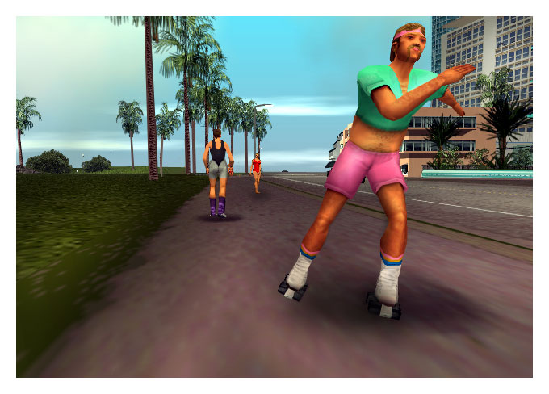
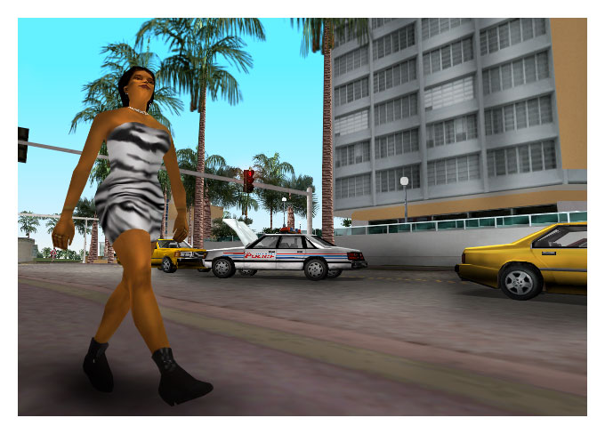
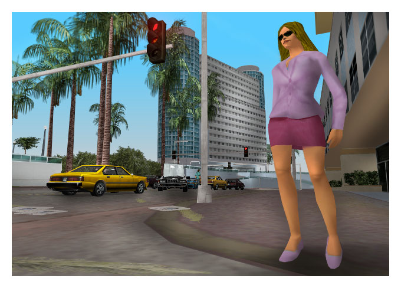
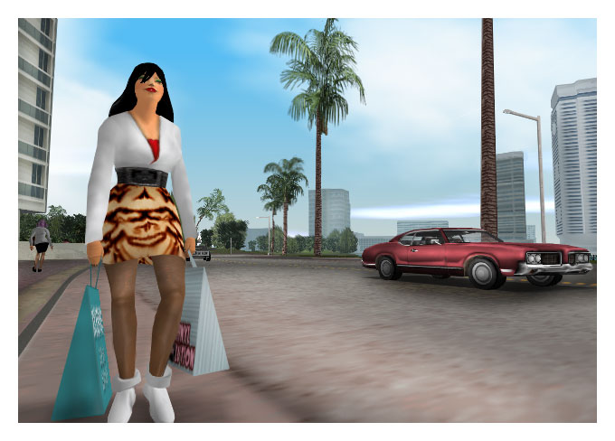
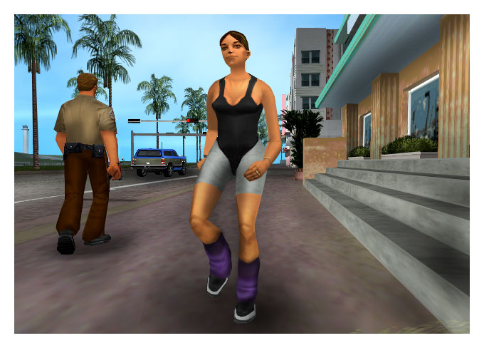

Well the 80s was all about expressing yourself. About putting on a show to hide the fact you was an empty shell
of a human being inside. Unfortunately, this was not always a good thing, as this line up of absolute plonkers
will make all too clear to you. These are all shots taken by me of random passers by one afternoon in Vice City
many years ago.

Look at this "man" - least said, soonest mended.

Contrary to what you might imagine, this bird is not blind. She just dresses like she is. Looks like she got run
over by the road markings machine. What a stupid slag.

A right fox this bird. She's wearing sunglasses to hide the tears because I just broke her heart. Honest.

Aaah! The timeless charm of leopard skin! Another bird with real deficiencies in the taste department. A moose
disguised as a leopard. Look at those bags. Bet she's going into the kind of debt it takes twenty years to pay
off. Reckon her knockers are fake and all.

Did anyone say "camel toe"? That pillock behind her is a copper. Fat bloke in taupe - can only mean one
thing.